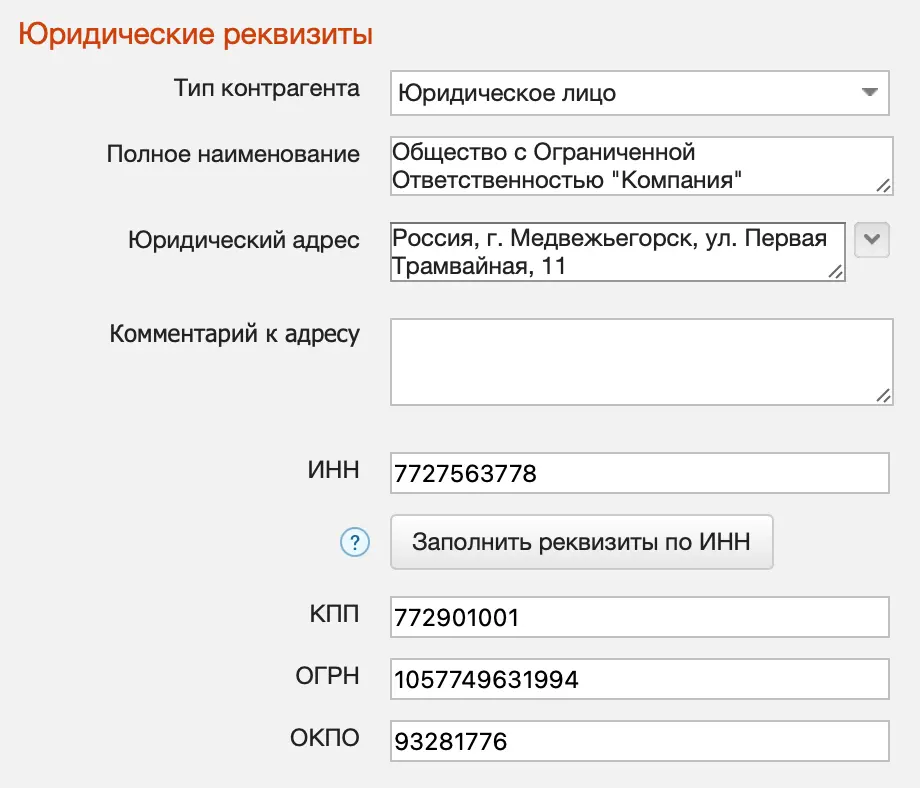
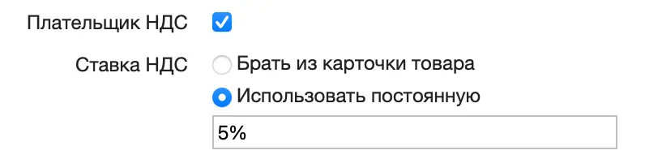
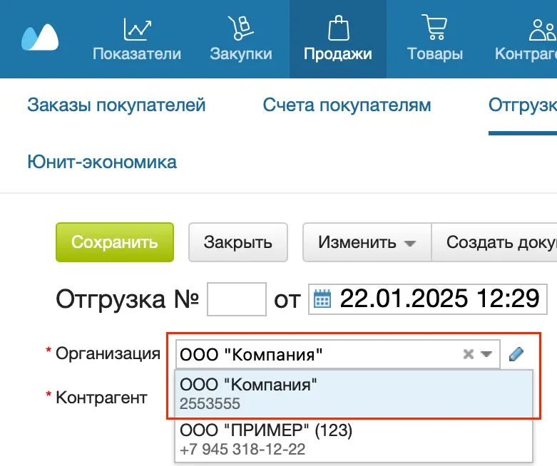
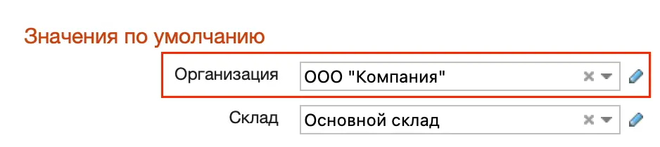
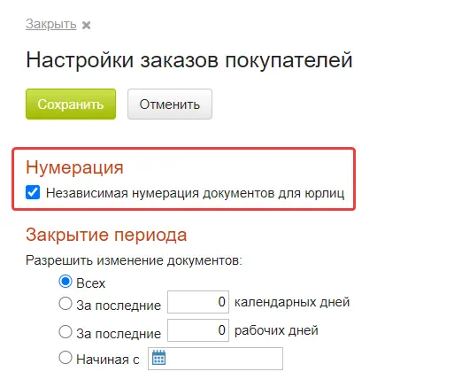
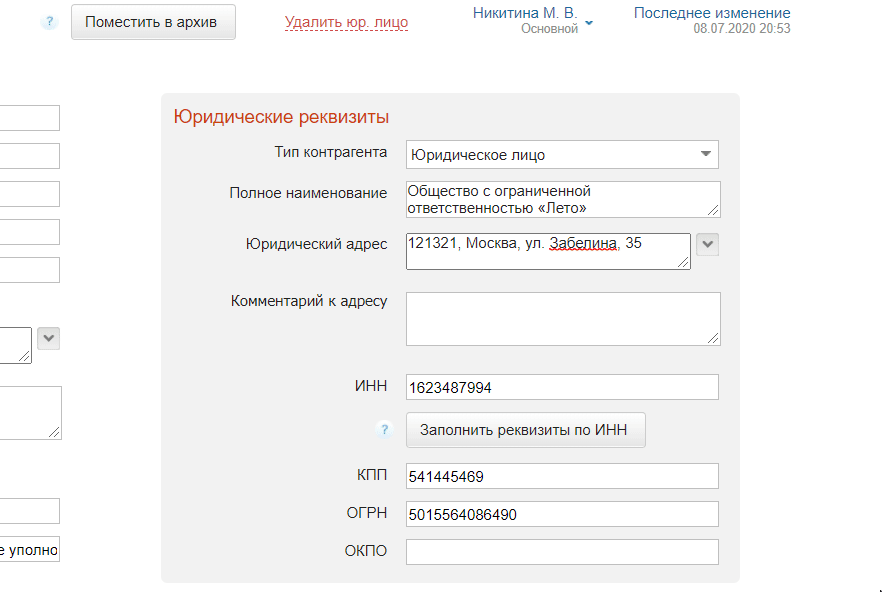
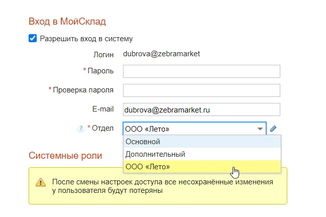
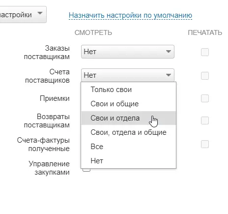

При регистрации в МоемСкладе автоматически создается карточка вашей организации, от ее имени ведется учет. У вас может быть одна или несколько организаций, возможное количество определяется настройками подписки. Все организации отображаются в разделе Меню пользователя → Настройки → Юрлица.
Карточка организации
Чтобы добавить организацию:
- Перейдите в раздел Меню пользователя → Настройки → Юрлица.
- Нажмите на кнопку +Юрлицо. Откроется новая карточка организации.
- Введите Краткое наименование организации — это обязательное поле. Укажите контактную информацию: телефон, факс, E-mail.
- Укажите Фактический адрес и добавьте комментарий к нему, если необходимо.
- Укажите Юридические реквизиты — их проще всего заполнить по ИНН.

- Если ваша организация является плательщиком НДС, в разделе Налоги поставьте галочку в соответствующей строке и укажите, какую ставку НДС использовать:
- Брать из карточки товара — применять для товаров ставки НДС, которые указаны в карточках товаров;
- Использовать постоянную — применять одну ставку НДС ко всем товарам. Укажите эту ставку НДС.

- Укажите данные руководителя и главного бухгалтера — ФИО, должность. Данные используются для печати документов.
- Добавьте логотип, печать и подпись. Данные могут потребоваться для выставления счетов.
Использование в документах и отчетах
Учет документов ведется для каждой организации отдельно. Создавая любой документ, в поле Организация обязательно нужно указать организацию, от имени которой этот документ создается.

Чтобы организация автоматически подставлялась в документы:
- Перейдите в раздел Меню пользователя → Настройки пользователя.
- Справа в разделе Значения по умолчанию выберите нужную организацию.

- Нажмите на кнопку Сохранить вверху.
Если автоподстановка организации настроена, ставка НДС, заданная в карточке организации, действует в документах: Отгрузка, Заказ покупателя, Счет покупателю, Возврат покупателя, Заказ поставщику, Счет поставщика, Полученный отчет комиссионера, Продажа, Возврат, Предоплата, Возврат предоплаты, Вывод из оборота, Вывод из оборота (ОСУ).
В документах: Приемка, Возврат поставщику, Отчет комиссионера выданный, Внутренний заказ, действует ставка НДС, указанная в карточке товара.
Управление юрлицами
Возможное количество организаций определяется настройками подписки. Если организация больше не используется, ее можно отправить в архив.
Для каждого юрлица можно настроить независимую нумерацию документов:
- Перейдите в раздел с документами, например Продажи → Заказы покупателей.
- Нажмите на шестеренку справа вверху.
- Поставьте флажок в строке Независимая нумерация документов для юрлиц.

- Нажмите на кнопку Сохранить.
Разделение доступа по юрлицам
Можно разграничить доступ к документам по юрлицам, чтобы сотрудники могли просматривать документы только своей организации.
Для этого сначала нужно назначить для юрлица отдел:
- Перейдите в раздел Меню пользователя → Настройки → Юрлица.
- Откройте карточку нужного юрлица.
- Вверху справа кликните на имя сотрудника — откроются данные о владельце.
- Создайте для этого юрлица особый отдел.
- Снимите флажок в строке Общий доступ.

- Нажмите на кнопку Сохранить слева вверху.
Затем добавьте сотрудника в этот отдел:
- Перейдите в раздел Меню пользователя → Настройки → Сотрудники.
- Откройте карточку нужного сотрудника.
- Справа укажите для сотрудника новый отдел.

- Нажмите на кнопку Сохранить слева вверху.
Далее настройте доступ для сотрудника:
- Тут же в карточке сотрудника отметьте справа системную роль Пользователь и нажмите на кнопку Настроить права.
- Установите настройки доступа:
- Справочники → Юрлица → Свои и отдела либо Свои, отдела и общие.
- Для всех документов в разделах — Свои и отдела либо Свои, отдела и общие.

- Нажмите на кнопку Сохранить настройки.
- Нажмите на кнопку Сохранить слева вверху.